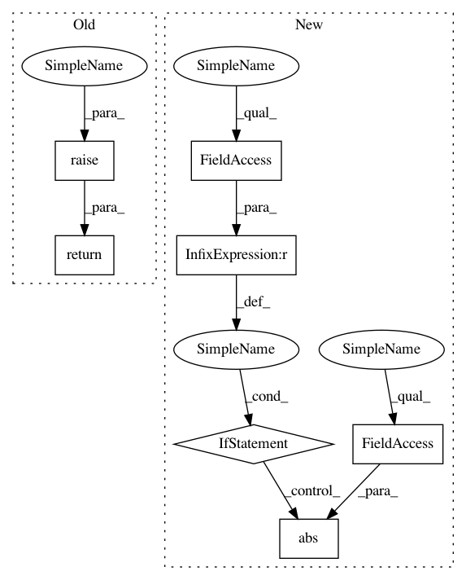

f09b1d753bff6d85b32b52f01f4dee86511f3dbb,tensorforce/core/networks/layer.py,Linear,tf_regularization_losses,#Linear#,313
Before Change
def tf_regularization_losses(self):
if self.l2_regularization == 0.0:
return super(Linear, self).tf_regularization_loss()
if super(Linear, self).tf_regularization_loss() is None:
losses = list()
else:
After Change
if self.bias is not None:
losses.append(self.l2_regularization * tf.nn.l2_loss(t=self.bias))
if self.l1_regularization > 0.0:
losses.append(self.l1_regularization * tf.reduce_sum(input_tensor=tf.abs(x=self.weights)))
if self.bias is not None:
losses.append(self.l1_regularization * tf.reduce_sum(input_tensor=tf.abs(x=self.bias)))
if len(losses) > 0:
return tf.add_n(inputs=losses)
else:
return None
In pattern: SUPERPATTERN
Frequency: 3
Non-data size: 7
Instances
Project Name: reinforceio/tensorforce
Commit Name: f09b1d753bff6d85b32b52f01f4dee86511f3dbb
Time: 2017-10-21
Author: aok25@cl.cam.ac.uk
File Name: tensorforce/core/networks/layer.py
Class Name: Linear
Method Name: tf_regularization_losses
Project Name: reinforceio/tensorforce
Commit Name: f09b1d753bff6d85b32b52f01f4dee86511f3dbb
Time: 2017-10-21
Author: aok25@cl.cam.ac.uk
File Name: tensorforce/core/networks/layer.py
Class Name: Conv2d
Method Name: tf_regularization_loss
Project Name: reinforceio/tensorforce
Commit Name: f09b1d753bff6d85b32b52f01f4dee86511f3dbb
Time: 2017-10-21
Author: aok25@cl.cam.ac.uk
File Name: tensorforce/core/networks/layer.py
Class Name: Linear
Method Name: tf_regularization_losses
Project Name: SpiNNakerManchester/sPyNNaker
Commit Name: bb9f5f36c24eaa5cb320c9ef157cc9fbed295b10
Time: 2019-10-28
Author: andrew.gait@manchester.ac.uk
File Name: spynnaker/pyNN/models/neuron/synapse_dynamics/synapse_dynamics_stdp.py
Class Name: SynapseDynamicsSTDP
Method Name: get_weight_maximum